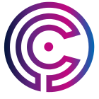

CCDC FamilieCCDC Platform
Het brede verificatieplatform.
app.checkccdc.comDrop een factuur, contract of koopovereenkomst. In seconden krijg je een vertrouwensscore. Wij checken de partijen, de bedragen, de IBANs en de bevoegdheden.
Werkt in 31+ landen. Voor bedrijven (KYC/AML, bewaarplicht). En voor particulieren bij een grote aankoop — de eerste check is gratis, geen kennis vereist.
- Voor bedrijven: KYC, AML-compliance, geverifieerd dossier voor de bewaarplicht.
- Voor particulieren: eerste check gratis, geen kennis nodig.
- Werkingsgebied: 31+ landen.